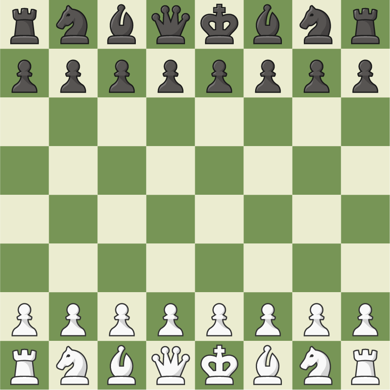

FunMath101
FunMath oyunu ile eğlenceli avatarları haraket ettirerek karşınıza gelen dört işlemlerden
en yüksek olanı bulmaya çalışabilirsiniz.Oyun sonunda en fazla puanı toplayan kazanır.
Oyun iki kişi oynanır.
FunMaze
FunMaze oyunu eğlenceli avatarları haraket ettirerek labirenti karşınızdaki oyuncudan daha erken bitirmeye çalıştığınız
bir oyundur.Oyun esnasında labirent içerisinde yer alan kutucukları toplayarak rakibinizi dondurma özelliğine sahip
olabilirsiniz.Oyun iki kişi oynanır.
FunColorgate
FunColorgate oyununda oyun esnasında duydugunuz renklere göre doğru renk olan bölmelere yönelme oyunudur.
Oyun iki kişi oynanır.

Chess Game
Chess oyunu ile hem eğlenceli vakit geçirip hem de kendinizi eğitme fırsatı bulabilirsiniz.Oyuna bir arkadaşınla katılabilirsin.